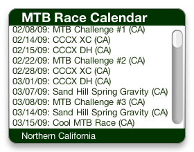
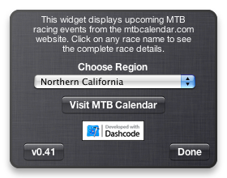

MTBcalendar Dashboard Widget
This is a little dashboard widget which lets you see regional MTB race calendars from the MTB Calendar website.
Preview
 
Installation
Installing the widget should be dead simple on a Mac OS X machine running 10.4.3 or higher.
If you’re using Safari, click the download link. When the widget download is complete, show Dashboard, click the Plus sign to display the Widget Bar and click the widget’s icon in the Widget Bar to open it. If you’re using a browser other than Safari, click the download link. When the widget download is complete, unarchive it and place it in /Library/Widgets/ in your home folder. show Dashboard, click the Plus sign to display the Widget Bar and click the widget’s icon in the Widget Bar to open it.
Please note, that this widget is only supported on Mac OS X. I may be creating a XP or Google or Yahoo! widget if there is any interest.Usage
This widget will allow you to see upcoming MTB events that have been entered on the mtbcalendar.com site.
The only preference setting on this widget is accessible via the back panel (click the (i) icon in the lower right hand corner to show). It is a pulldown menu which lists different regions so that you can find races closest to where you live. It defaults to “Northern California” (hells yeah) but you can set it to any region you choose. The regions are mostly small cluster of states, but some states are split (like California).
To see more details about any race event, simply click on the events name on the front panel and it will take you to the appropriate page on the MTB Calendar website.
Configuration
The regions on the back panel pulldown menu basically refer to groups of states (or parts of states). The following list maps state abbreviations (or parts of states) to their pulldown menu region name:
- NorCal: CA north of latitude 36.3219 (just south of Fresno) plus parts of Northern Nevada (east of longitude 118.6846 which is basically the Reno area)
- SoCal: CA south of the 36.3219 latitude
- Northwest (3): ‘WA’, ‘OR’, ‘ID’
- Mountain (5): ‘UT’, ‘CO’, ‘WY’, ‘MT’, ‘NV’ (except Reno area)
- Southwest (2): ‘AZ’, ‘NM’
- South Central (4): ‘OK’, ‘AR’, ‘TX’, ‘LA’
- Central (4): ‘KS’, ‘MO’, ‘NE’, ‘IA’
- North Central (3): ‘SD’, ‘ND’, ‘MN’
- Midwest (6): ‘WI’, ‘IL’, ‘IN’, ‘OH’, ‘MI’, ‘KY’
- Northeast (7): ‘ME’, ‘NH’, ‘VT’, ‘NY’, ‘CT’, ‘RI’, ‘MA’
- Southeast (7): ‘FL’,‘GA’, ‘AL’, ‘MS’, ‘TN’, ‘SC’, ‘NC’
- East (6): ‘VA’, ‘WV’, ‘DE’, ‘MD’, ‘NJ’, ‘PA’
- Pacific Islands (1): ‘HI’
- Alaska (1): ‘AK’
- Canada (5): ‘BC’, ‘AB’, ‘ON’, ‘NS’, ‘MB’
Author
This dashboard widget was created by /k for the MTBcalendar website. /k also writes the NorCal MTB Racing Blog and occasionally gets to ride his bike.
Contact
Please send any comments or questions about this widget to norcalmtbracing AT gmail D0T com (and remember to replace AT with @ and D0T with .)
Download
The most current version of MTBcalendar widget is 0.43 and is available at http://slashk.github.com/mtb-calendar-widget/releases/mtbcalendar_v045.zip.
Source
This widget was created with Apple’s Dashcode and follows most of their setup conventions. However, I have added the Prototype javascript library (version 1.6.0.3).
The source is available via my GitHub account. You can clone the project with Git by running:
$ git clone git://github.com/slashk/mtb-calendar-widget
Changelog
- version 0.45 (December 25th, 2008) "forgotten"
- added in forgotten midwest and east regions (sorry guys)
- added new icon and graphics (this actually came v0.44)
- version 0.44 was unreleased --
- changed version button to go to github documentation page
- version 0.43 (December 19th, 2008)
- minor cosmetic change on version number
- version 0.42 (December 19th, 2008) “stutter”
- fixed double json request problem
- fixed 10 minute refresh bug (not saving last time)
- small streamlining of code
- version 0.41 (December 13th, 2008) “shorty”
- revamped interface to occupy less screen real estate
- added Hawaii and Alaska to regions (sorry guys!)
- version 0.4 (December 10th, 2008)
- added instructions and button to the back
- minor stylistic changes
- version 0.3 (December 3rd, 2008) BETA1
- fixed refresh issues. now refreshes every 15 minutes.
- fixed bug on scrollbar refreshing
- fixed empty calendar issues. now includes text.
- added all regions to popup menu
- streamlined code
- version 0.2 (December 1st, 2008)
- icon ! (but it sucks)
- back popup menu works !
- correctly initialises preferences
- weblinks work !
- it’s green !
- version 0.1 (November 28th, 2008)
- basic creation — only moderately usable
- no savable preferences or icon